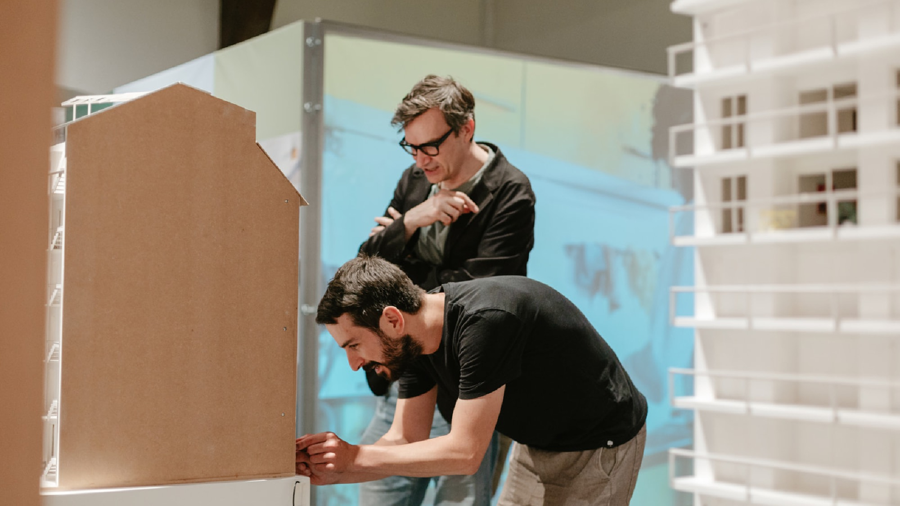

Makers van Architectuurwijzer
Een tentoonstelling ontstaat nooit alleen. Achter de werking van de culturele organisatie Architectuurwijzer staat een netwerk van architecten, scenografen, grafisch ontwerpers, illustratoren, fotografen, onderzoekers en kunstenaars. Sinds 2025 brengt de interviewreeks Makers van Architectuurwijzer deze creatieve stemmen voor het voetlicht. Hun bijdrage gaat verder dan de uitvoering van een opdracht: ze bepalen mee hoe architectuur wordt verbeeld, geïnterpreteerd en toegankelijk gemaakt voor een breed publiek.
De reeks begon met de makers van de tentoonstelling Hier wil ik wonen! Coöperatief woondromen in Vlaanderen, onder wie scenograaf Joris Kerremans, illustrator Hanne Van Gils, architect Stijn Baets, grafisch ontwerpduo Gestalte en kunstenaars Kasper Demeulemeester en Jakob Van den Broucke. Ook architect-kunstenaar Kristof Ribus en kunstenaars Malgorzata Maria Olchowska en Bing York Oh komen aan bod. Samen vertegenwoordigen ze uiteenlopende disciplines en benaderingen, van ruimtelijk ontwerp en grafische vormgeving tot illustratie en artistiek onderzoek.
De interviews vertrekken vanuit de samenwerking met Architectuurwijzer, maar reiken veel verder. Ze volgen de persoonlijke parcoursen van de makers, onderzoeken hoe hun ideeën en werkwijzen ontstaan en gaan op zoek naar de invloeden, ontmoetingen en ervaringen die hun praktijk vormgeven. Zo groeit Makers van Architectuurwijzer uit tot een reeks persoonlijke portretten waarin niet alleen het resultaat, maar vooral ook het creatieve proces centraal staat.